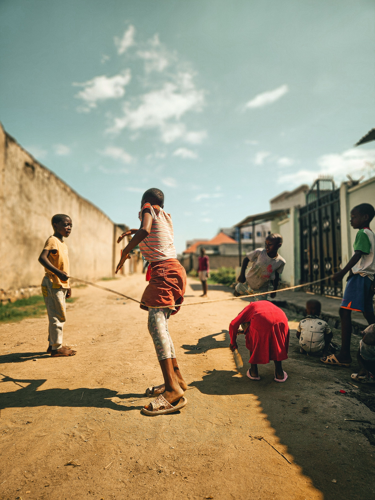

Our Community Programmes
Community programmes provide opportunities for
individuals and families to access information,
support and activities that can contribute to
stronger communities.
The programmes presented on this student website
represent a proposed structure for the organisation's
online presence.
Community Awareness
Community awareness activities can help residents
learn about important social issues, available
support services and resources within their
communities.
Activities May Include:
- Community information sessions
- Awareness campaigns
- Information sharing
- Community discussions
Youth Development
Youth development programmes can provide young
people with opportunities to develop skills,
participate in community activities and learn
about available resources.
Activities May Include:
- Skills development activities
- Youth awareness sessions
- Educational support
- Community participation
Family Support Initiatives
Family support initiatives can provide information,
guidance and referrals to individuals and families
experiencing challenges.
Activities May Include:
- Family support information
- Parenting information
- Support referrals
- Community resources
Community Outreach
Community outreach helps organisations engage
directly with people and make information about
available services easier to access.
Activities May Include:
- Community visits
- Information distribution
- Community engagement
- Support awareness
Volunteer Opportunities
Volunteers can contribute their time and skills
to support community initiatives and activities.
Volunteers May Help With:
- Community events
- Awareness campaigns
- Administrative assistance
- Community outreach
No programmes match your search.
Please try another search term or category.
Get Involved
If you would like to learn more about our programmes
or become involved in community activities, please
contact us.
Get Involved